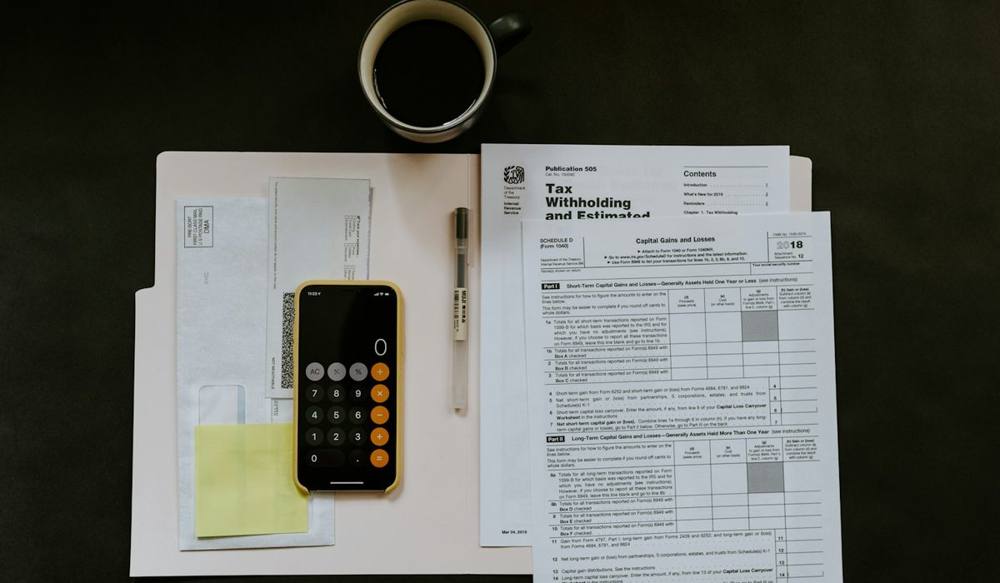

En bref
Pour un interdit bancaire, Nickel arrive en tête avec 8,8/10 (relevé de démonstration), parce que les fichés Banque de France y sont acceptés sans justificatif de domicile ni condition de revenus, pour 25 €/an. La Banque Postale suit avec sa Formule Simplicité à 1 €/mois (8,3/10). Le droit au compte donne à tous un compte gratuit dans une banque désignée par la Banque de France (7,9/10). Chez Revolut, N26 ou Hello bank!, l'ouverture reste soumise à l'acceptation du dossier.
- Avec le droit au compte, la banque désignée ouvre le compte sous 3 jours ouvrés après un dossier complet, et les services bancaires de base sont gratuits
- L'offre clientèle fragile est plafonnée à 3 € par mois, La Banque Postale facture la sienne 1 € par mois
- Une inscription au FCC dure 5 ans au plus et s'efface dès la régularisation
- Revolut, N26 et Hello bank! ont une offre de base à 0 €, Nickel coûte 25 € par an
- Un rejet de prélèvement est plafonné à 20 €, Nickel le facture 10 €
Sommaire de ce comparatif
Nos critères et leur poids
Un classement pour personnes fichées ne se juge pas comme un classement de cartes haut de gamme. La question n'est pas d'obtenir le meilleur cashback. Elle est d'avoir un compte tout court, vite, sans se faire facturer chaque faux pas. L'accessibilité pèse donc deux fois plus que chacun des autres critères.
| Critère | Poids | Ce qu'on regarde |
|---|---|---|
| Accessibilité | 40 % | Fichés FCC et FICP acceptés, justificatifs demandés, condition de revenus |
| Prix | 20 % | Coût annuel du compte et de la carte, frais d'incident |
| Ouverture | 20 % | Délai, démarches, lieu où l'on récupère la carte et le RIB |
| Services | 20 % | Chèques de banque, dépôt d'espèces, application, plafonds |
La note globale est la moyenne pondérée des quatre critères.
Ce barème explique presque tout le classement. Une offre gratuite qui peut refuser votre dossier perd des points d'accessibilité. Une offre ouverte à tous mais payante en perd sur le prix. Aucune solution ne gagne partout, et c'est précisément ce que les écarts de notes traduisent.
Le classement des comptes pour interdit bancaire
Trois solutions se détachent et elles ne se ressemblent pas. La première est un compte de paiement vendu chez les buralistes, la deuxième une offre bancaire encadrée par la loi, la troisième une néobanque gratuite qui ne promet rien aux personnes fichées.
01 Le plus accessible aux fichésFichés acceptés, 25 €/an8,8/10
Le plus accessible aux fichésFichés acceptés, 25 €/an8,8/10
Le plus accessible aux fichésFichés acceptés, 25 €/an8,8/1002 La moins chère des offres payantesFormule Simplicité à 1 €/mois8,3/10
La moins chère des offres payantesFormule Simplicité à 1 €/mois8,3/10
La moins chère des offres payantesFormule Simplicité à 1 €/mois8,3/1003 La meilleure applicationStandard à 0 €, sur acceptation du dossier7,6/10
La meilleure applicationStandard à 0 €, sur acceptation du dossier7,6/10
La meilleure applicationStandard à 0 €, sur acceptation du dossier7,6/10Nickel prend la tête sur l'accessibilité. Cet établissement de paiement, filiale de BNP Paribas, accepte les interdits bancaires et les fichés Banque de France, ne demande ni justificatif de domicile ni condition de revenus et ne laisse aucun découvert possible avec sa carte à autorisation systématique. Il perd sur le prix. À 25 € par an, il coûte plus cher que la Formule Simplicité de La Banque Postale, facturée 12 € par an, et que le droit au compte, gratuit.
La Banque Postale gagne sur les services. Sa formule pour la clientèle fragile inclut une carte Réalys à autorisation systématique, deux chèques de banque par mois et des frais d'incident plafonnés à 20 € par mois et 200 € par an. Sa limite tient à l'accès. L'offre est réservée aux clients que la banque reconnaît en situation de fragilité financière.
Le droit au compte obtient 7,9/10 et se classe troisième du tableau. Il n'est pas sur le podium pour une raison pratique, ce n'est pas une marque. La banque qui vous ouvre le compte est désignée par la Banque de France et vous ne la choisissez pas. Revolut complète donc le podium avec 7,6/10, porté par une offre Standard à 0 € et l'application la plus riche du panel.
Le tableau comparatif des 6 solutions
Six solutions, notées sur le même barème. La colonne « Accès si fiché » est celle qui pèse le plus. Elle dit si votre inscription au FCC ou au FICP peut bloquer l'ouverture.
| Compte | Note /10 | Prix par an | Accès si fiché | Ouverture | Le point fort |
|---|---|---|---|---|---|
| NickelNotre choix | 8,8 | 25 € | Accepté | Pré-inscription en ligne, carte et RIB en point de vente | Fichés acceptés sans justificatif de domicile |
| La Banque Postale, Formule Simplicité | 8,3 | 12 € | Oui si client identifié fragile | Souscription auprès de la banque | Frais d'incident plafonnés à 20 € par mois |
| Droit au compte, banque désignée | 7,9 | 0 € | Garanti par la loi | Compte ouvert sous 3 jours ouvrés après dossier complet | Gratuit et opposable |
| Revolut Standard | 7,6 | 0 € | Sur acceptation du dossier | En ligne | L'application la plus complète |
| N26 Standard | 7,4 | 0 € | Sur acceptation du dossier | En ligne | Gratuit sans condition de revenus |
| Hello bank!, Hello One | 7,1 | 0 € | Sur acceptation du dossier | En ligne | Une banque du groupe BNP Paribas, gratuite |
Offres d'entrée de gamme, tarifs publiés par les établissements et règles de la Banque de France. Notes et tarifs, relevé de démonstration de la rédaction, octobre 2026.
La lecture est nette. Les offres gratuites de Revolut, N26 et Hello bank! sont les moins chères du tableau, mais aucune ne publie d'engagement envers les personnes fichées. Leur ouverture reste soumise à l'acceptation du dossier, ce qui leur coûte des points d'accessibilité. Le droit au compte est gratuit et garanti par la loi, mais il suppose un refus préalable et quelques jours de procédure. Nickel et La Banque Postale occupent le milieu, payantes mais accessibles.
Hello bank! et Nickel appartiennent tous deux au groupe BNP Paribas. Ils ne visent pas le même public. Hello One est une offre bancaire en ligne gratuite, plafonnée à 1 000 € de paiements par mois et 400 € de retraits par semaine. Nickel est un compte de paiement payant, pensé pour ceux qu'une banque refuse.
Combien coûte un compte quand on est fiché
L'écart de prix entre ces solutions tient en quelques euros par an. L'écart de frais d'incident peut se compter en dizaines d'euros par mois. C'est là qu'une personne fichée perd le plus d'argent, sur les commissions d'intervention et les rejets de prélèvement.
| Offre ou règle | Montant | Ce qu'il faut savoir |
|---|---|---|
| Compte ouvert au titre du droit au compte | 0 € | Services bancaires de base gratuits |
| Formule Simplicité, La Banque Postale | 12 € par an | Carte Réalys et 2 chèques de banque par mois |
| Offre clientèle fragile, toutes banques | 36 € par an au plus | Plafond réglementaire de 3 € par mois |
| Nickel Classic | 25 € par an | Carte à autorisation systématique, pas de chéquier |
| Revolut Standard, N26 Standard, Hello One | 0 € | Ouverture sur acceptation du dossier |
| Commission d'intervention, cas général | 8 € par opération | 80 € par mois au plus |
| Commission d'intervention, offre clientèle fragile | 4 € par opération | 20 € par mois et 200 € par an au plus |
| Rejet de prélèvement | 20 € au plus | Jamais plus que le montant du prélèvement, 10 € chez Nickel |
Tarifs publiés par les établissements et plafonds réglementaires. Notes et tarifs, relevé de démonstration de la rédaction, octobre 2026.
Deux règles changent la donne. Une fois reconnu en situation de fragilité financière, vous pouvez obtenir l'offre clientèle fragile de votre propre banque, plafonnée à 3 € par mois, avec une commission d'intervention ramenée à 4 € par opération. Sans cette offre, les frais d'incident d'un client fragile restent plafonnés à 25 € par mois, commissions comprises.
Nickel joue sur un autre registre. Un paiement par carte sans provision est simplement refusé. Un prélèvement sans provision est rejeté pour 10 €, la moitié du plafond légal. Le dépôt d'espèces coûte 3 % du montant, soit 30 € pour 1 000 € déposés, un vrai point faible pour qui est payé en liquide. Pas de chéquier non plus, l'encaissement d'un chèque coûte 3 €.
Une personne fichée ne paie pas cher son compte. Elle paie cher ses incidents. Comparez d'abord les frais de rejet et les plafonds, le prix de la carte vient après.
Le droit au compte, la solution gratuite que personne ne vend
C'est la voie que les comparatifs oublient, parce qu'elle ne rapporte rien à personne. Toute personne qui s'est vu refuser l'ouverture d'un compte peut saisir la Banque de France, qui désigne un établissement tenu de l'ouvrir. Le parcours tient en quatre étapes.
- Vous demandez l'ouverture d'un compte et la banque refuse, elle doit alors vous remettre une attestation de refus.
- Vous transmettez le dossier à la Banque de France, qui désigne un établissement sous 24 heures, soit 1 jour ouvré, après réception d'un dossier complet.
- La banque désignée vous envoie la liste des justificatifs sous 3 jours, puis ouvre le compte sous 3 jours ouvrés après réception du dossier complet.
- La lettre de désignation reste valable 6 mois et les services bancaires de base sont gratuits.

Le droit au compte a ses limites. Vous ne choisissez pas la banque, l'agence désignée n'est pas forcément la plus proche et les services se limitent au socle légal, sans chéquier. Pour un salarié fiché dont l'employeur attend un RIB à la fin de la semaine, le délai compte autant que le prix. Pour tous les autres, c'est la solution la moins chère du marché, et de loin.
Comment choisir quand on est fiché à la Banque de France
Si vous avez besoin d'un RIB cette semaine
Nickel. La pré-inscription se fait en ligne en 5 minutes environ, puis la carte et le RIB se récupèrent dans l'un des plus de 8 600 points de vente revendiqués, ou arrivent par courrier à domicile. C'est la solution la plus directe du panel pour une personne fichée, à condition d'accepter 25 € par an.
Si chaque euro compte
Le droit au compte, gratuit. Si votre banque actuelle vous reconnaît comme client fragile, demandez-lui son offre clientèle fragile, 3 € par mois au plus. À La Banque Postale, la Formule Simplicité coûte 1 € par mois et plafonne les frais d'incident à 20 € par mois.
Si vous êtes payé en espèces
Le réseau de buralistes de Nickel reste pratique pour déposer et retirer, mais chaque dépôt coûte 3 %. Au-delà de quelques centaines d'euros par mois, la facture grimpe vite. Vérifiez les conditions de dépôt d'espèces de La Banque Postale sur sa plaquette tarifaire avant de trancher.
Si vous êtes inscrit au FICP mais pas interdit bancaire
Le FICP recense les incidents de remboursement de crédit, pas les chèques sans provision. L'inscription dure 5 ans au plus, jusqu'à 7 ans en plan de surendettement. Rien n'empêche de tenter une ouverture gratuite chez Revolut, N26 ou Hello bank!, en sachant que l'ouverture reste soumise à l'acceptation du dossier. En cas de refus, le droit au compte prend le relais.
Notre verdict
Pour un interdit bancaire qui veut un compte vite et sans justificatif de domicile, Nickel est la solution la mieux notée avec 8,8/10. Ce n'est pas la moins chère. Le droit au compte est gratuit et La Banque Postale facture sa Formule Simplicité 1 € par mois, avec des services plus complets.
Si votre priorité est la rapidité et l'autonomie, prenez Nickel. Si votre priorité est le prix, faites jouer le droit au compte ou demandez l'offre clientèle fragile à votre banque. Si vous n'êtes inscrit qu'au FICP, tentez d'abord l'offre gratuite de Revolut, N26 ou Hello bank!.
Questions fréquentes
Quelle banque accepte les interdits bancaires en 2026 ?
Nickel accepte les interdits bancaires et les fichés Banque de France pour 25 € par an, sans justificatif de domicile. La Banque Postale propose sa Formule Simplicité à 1 € par mois aux clients en situation de fragilité. Le droit au compte oblige une banque désignée par la Banque de France à ouvrir un compte gratuit à toute personne refusée ailleurs.
Peut-on ouvrir un compte Revolut ou N26 quand on est fiché ?
Revolut et N26 proposent une offre Standard à 0 € sans condition de revenus, mais ne publient pas d'engagement envers les personnes fichées. L'ouverture reste soumise à l'acceptation du dossier. En cas de refus, le droit au compte auprès de la Banque de France prend le relais.
Combien de temps faut-il pour obtenir un compte avec le droit au compte ?
La Banque de France désigne un établissement sous 24 heures, soit 1 jour ouvré, après réception d'un dossier complet. La banque désignée envoie la liste des justificatifs sous 3 jours, puis ouvre le compte sous 3 jours ouvrés après dossier complet. La lettre de désignation reste valable 6 mois.
Combien coûte l'offre clientèle fragile ?
L'offre clientèle fragile est plafonnée à 3 € par mois, soit 36 € par an au plus. La Banque Postale facture sa Formule Simplicité 1 € par mois, avec une commission d'intervention limitée à 4 € et des frais d'incident plafonnés à 20 € par mois et 200 € par an.
Combien de temps reste-t-on fiché à la Banque de France ?
Une inscription au FCC, le fichier central des chèques, dure 5 ans au plus et s'efface dès la régularisation. Une inscription au FICP dure 5 ans au maximum, jusqu'à 7 ans en plan de surendettement, avec une radiation anticipée si les sommes dues sont remboursées.
Comment sont notés les comptes de ce classement ?
Les notes sont un relevé de démonstration de la rédaction sur cinq critères, accessibilité, prix, ouverture, services et note globale. Dans ce classement pour interdits bancaires, l'accessibilité pèse 40 %, le prix 20 %, l'ouverture 20 % et les services 20 %, la note globale étant leur moyenne pondérée. Nickel obtient 8,8/10 et La Banque Postale 8,3/10.
Notre méthode
Ce comparatif repose sur des données publiques, vérifiables une par une, et sur des critères affichés avant le classement.
- Les tarifs sont relevés dans les plaquettes tarifaires et les pages officielles des établissements, frais de tenue de compte et de carte compris
- Les conditions d'ouverture (revenus, âge, justificatifs, délai) sont vérifiées sur le parcours d'ouverture de chaque offre
- Les plafonds réglementaires (frais d'incident, offre clientèle fragile, droit au compte) sont ceux publiés par la Banque de France et service-public.fr
- Les avis clients sont lus sur les stores d'applications et Trustpilot, en retenant les motifs récurrents plutôt que la note seule
- Chaque critère est noté sur 10 et la grille de notation est identique d'un comparatif à l'autre